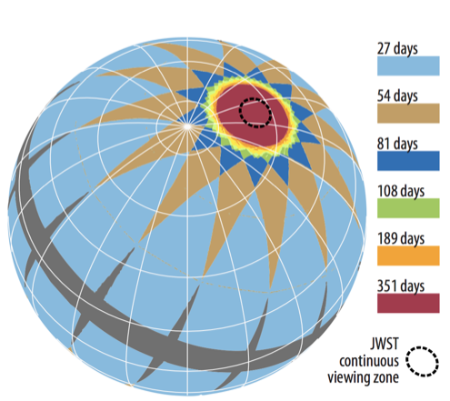

Launch and orbit
TESS is scheduled for launch via a SpaceX Falcon 9 from Cape Canaveral no earlier than March 20, 2018.
TESS will observe from a unique High Earth Orbit (HEO) that will provide an unobstructed view of its field to obtain continuous light curves and a more stable platform for precise photometry than the low-Earth orbit. The TESS orbit is elliptical, with nominal perigee and apogee of 17 and 59 Earth radii, respectively, and a 13.7-day period in 2:1 resonance with the Moon’s orbit. The orbit is above Earth’s radiation belts providing a low-radiation environment.
TESS data are returned to Earth during each orbital perigee using the Deep Space Network.
 Maneuvers for achieving the TESS mission orbit (shown in light blue). (Ricker et al. 2015)
Maneuvers for achieving the TESS mission orbit (shown in light blue). (Ricker et al. 2015)
Field of view
TESS is equipped with four CCD cameras that have adjacent field-of-views to produce a 4 x 1 array, or 'observing sector', yielding a combined field-of-view of 96 x 24 degrees


Time sampling
TESS will collect brightness measurements of about 200,000 preselected stars ('postage stamps') every 2 minutes, and Full Frame Images (FFIs) (all pixels) at 30 minute cadence. The TESS cameras have an exposure time of 2 seconds, and the images are stacked for each 2 or 30 minute cadence onboard the spacecraft before they are compressed before stored in the solid state recorder. Each sector is observed for two orbits, each of which produces over 10k postage stamps and over 600 FFIs.

Observing strategy
TESS will survey over 90% of the sky by observing 26 individual sectors, 13 in the southern hemisphere and 13 in the northern hemispheres. Each hemisphere will be observed for 1 year each in the 2 year prime mission, beginning in the south. Each sector will be observed for two orbits (27.4 days total), once complete TESS will re-orient to the next sector moving eastward until the hemisphere has been tiled by 13 sectors.
Within each 96 x 24 degree sector TESS will observe 15,000 target stars on a 2 minute cadence and collect full frame images at 30 minute cadence. The sectors have ecliptic latitudes from 6 degrees to the ecliptic pole with increasing overlap at higher latitudes. There will be over 350 days of continuous coverage in the Continuous Viewing Zone (CVZ) at the ecliptic poles, which corresponds to the region accessible to NASA's upcoming James Webb Space Telescope.

Launch
Falcon 9 is a two-stage rocket designed and manufactured by SpaceX for the reliable and safe transport of satellites and the Dragon spacecraft into orbit. As the first rocket completely developed in the 21st century, Falcon 9 was designed from the ground up for maximum reliability. Falcon 9's simple two-stage configuration minimizes the number of separation events — and with nine first-stage engines, it can safely complete its mission even in the event of an engine shutdown.
Falcon 9 made history in 2012 when it delivered Dragon into the correct orbit for rendezvous with the International Space Station, making SpaceX the first commercial company ever to visit the station. Since then SpaceX has made multiple flights to the space station, both delivering and returning cargo for NASA. Falcon 9, along with the Dragon spacecraft, was designed from the outset to deliver humans into space and under an agreement with NASA, SpaceX is actively working toward that goal.
TESS will be launched at Cape Canaveral Air Force Station, Florida, with a planned date of no earlier than March 2018.
Science data flow
The flow of data from the spacecraft to its final archive involves participation from multiple institutions that make up the TESS project team, as described below.

Data from the TESS spacecraft will be downloaded through the Deep Space Network (DSN) and delivered to the Payload Operations Center (POC) at the Massachusetts Institute ofTechnology (MIT). The POC sends uncalibrated requantized pixel data, target lists, spacecraft configuration and engineering data, and focal plane characterization models (for calibration) to the Science Processing Operations Center (SPOC) at NASA Ames. The SPOC calibrates the science data in two steps, first by the orbit and then by the sector. The SPOC uses instrument calibration models provided by the POC to calibrate all science data. Once a full sector is calibrated the transiting planet search software is run by the SPOC to identify and flag threshold crossing events (TCEs). Calibrated target pixels and FFIs, light curves generated from 2-min cadence targets, and TCEs are sent to the TESS Science Office (TSO, which includes MIT and the Smithsonian Astrophysical Observatory, SAO). The TSO is responsible for detailed analysis of TCEs and the identification of TESS Objects of Interest (TOIs). The TSO will deliver lists of TOIs to the Mikulski Archive for Space Telescopes (MAST, located at the Space Telescope Science Institute, STScI) along with dispositions and information documenting the vetting process for each TOI on a regular schedule, nominally every four months. The processed data and meta-data from the SPOC will be archived at MAST. MAST is the primary science data archive for TESS and will provide tools to search and retrieve data. The TESS Science Support Center operates the Guest Investigator (GI) Program, which will supply a list of GI targets to the POC, and the GI proposers will retrieve their data from the MAST. All data archived at MAST will have no proprietary period and will be publicly available.